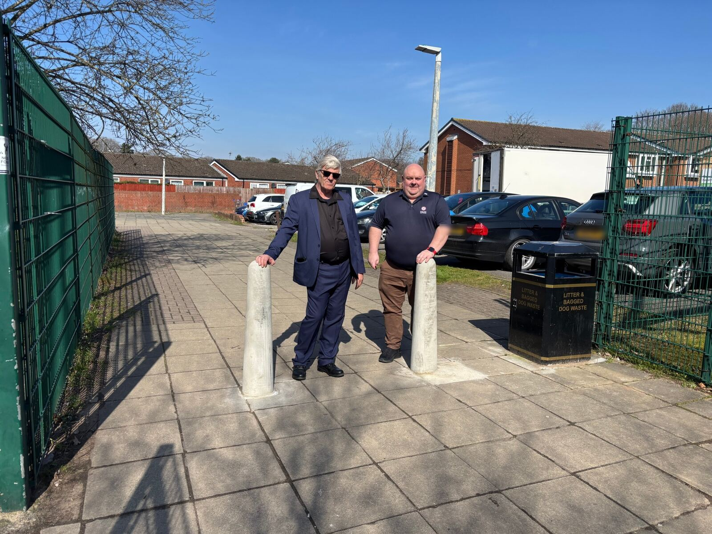

Delivered
Safer walkway outside Oak Tree Primary School
Drivers, especially delivery vans, were using a pedestrian walkway on the Oak Tree Estate as a shortcut, right outside Oak Tree Primary School, which many Ling Forest families use.
After residents raised it, residents' champion Nick Marks and I campaigned to get the bollards replaced. They're now back in place, and the walkway is safe for families again.